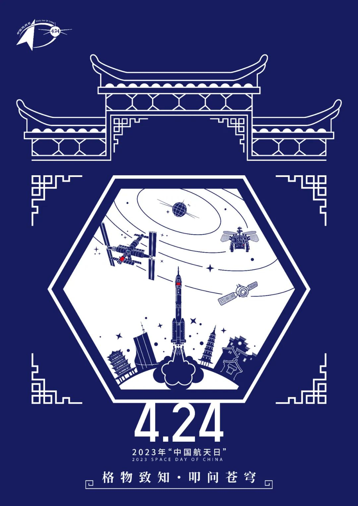
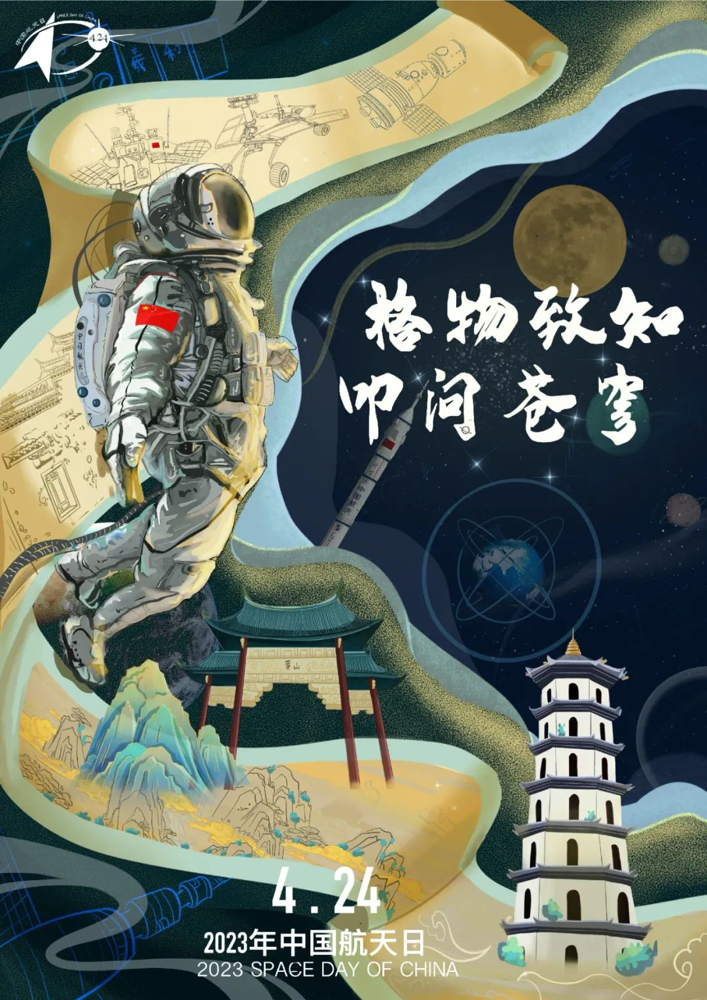
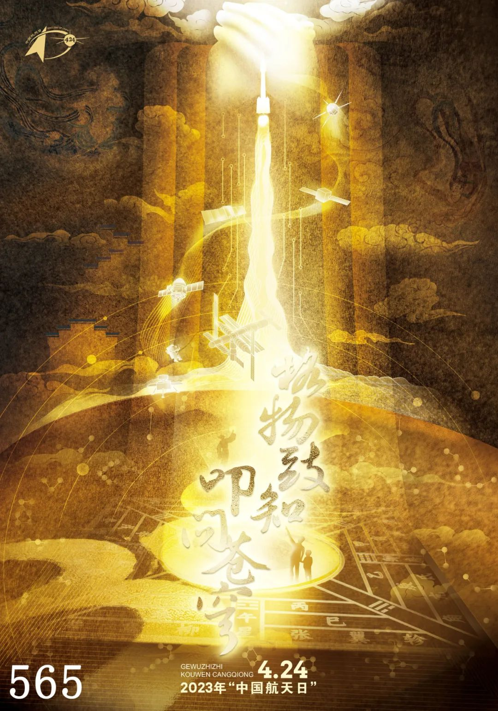

2023年中国航天日海报前20名公布
发布日期：2023年04月10日
不久前，国家航天局面向社会公开征集2023年中国航天日海报，一个多月的时间里陆续收到非常多的优秀作品。
经过初步评审，选出了得票排名前20的海报作品，一起来欣赏欣赏
画面上部分是具有典型中国传统文化特征的“反弹琵琶”飞天形象，代表古代中国对浩瀚宇宙的向往，以汉代画像砖中的后羿和龙车、宋代星相图、祥云
等与之呼应，体现中国传统文化的博大精深和古代先民充满浪漫主义想象力和英雄主义实践精神的宇宙观。
中间部分为挥手致意的航天员及“东方红”卫星、长征系列火箭、“天宫空间站”“祝融号”“嫦娥”“羲和”等具有里程碑意义的中国航天元素，彰显航天人怀着对未
来的希望和探索未知的决心，推动航天事业发展，致力航天强国建设的航天梦。
画面中间部分以剪影的形式描绘出一群向往科学、奔向未来的青少年形象。倡导为青少年营造健康成长、探索科学的环
境和氛围，从而赓续续中国航天的血脉、不断推进航天事业的发展和人类探索宇宙的进程。
将极具中国传统文化特色的徽派建筑和迎客松融入画面，致敬2023年
“中国航天日”的举办地安徽。

海报创作灵感源于安徽省徽派建筑“马头墙”，与剪纸艺术的表现手法相结合。中间是中式建筑六角窗，里面元素有：东方红1号、天宫二
号空间站、祝融号、安徽省会合肥市地标建筑等。寓意2023年，中国航天事业将更上一层楼。

书卷上方绘制“神舟十四号”“嫦娥五号”“祝融号”“羲和号”等代表中国航天的发展。
中部中国地图与航天员交相辉映，航天员以进入宇宙之姿呈现，拥抱宇宙，希望年轻航天员敢于追梦，蓄势待发努力实现梦想。下方为黄山及安徽塔，点题今年中国航天日的
举办地安徽。
